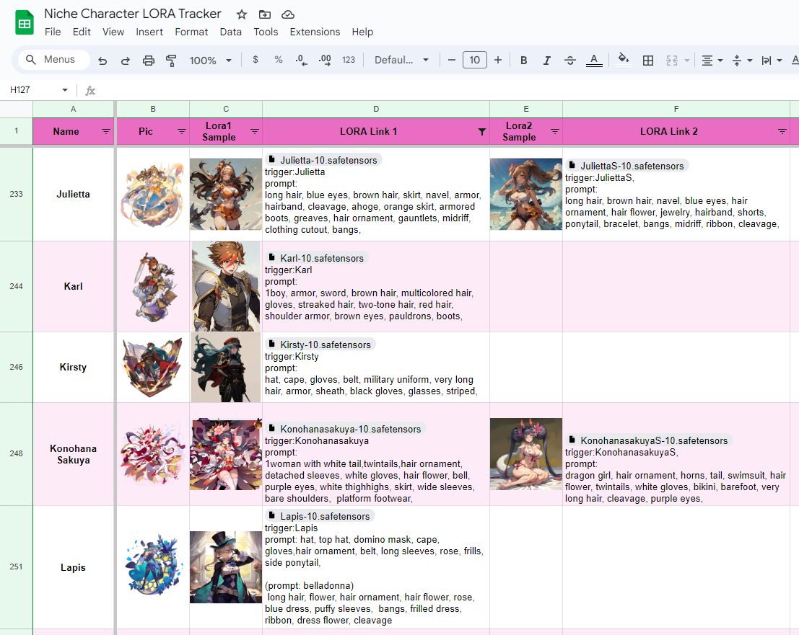

what am i left with?
Overall, I was actually fairly surprised at the strengths of AI when
it came to the generation aspect of the project. The fact that it only
took 50 images to replicate my style was astonishing and quite
violating. I was wondering how much it really needed, because I read
that some LORAs could even accurately copy characters at 10-15 images.
The accuracy of the AI detection model also surprised me a bit, but I
did know on a pixel-by-pixel analysis, there is an inherent quality
about AI artwork that makes it easy to detect that isn’t easily seen
by the human eye. The inaccuracy across Teachable Maschine and ml5.js
was also slightly surprising, with results varying wildly even though
it was the same image at different resolutions.
In general, AI affordances tended to push me towards feeding it more
and more training data to create a more accurate result, which was
primarily noticed with Teachable Machine. The inherent loss of control
when the final outcome was spit out and the specifics of the training
data used (images, resolution, colors) also encouraged a lot of
fiddling with different aspects of AI in order to get it to behave how
you want. This was also reflected in my use of Stable Diffusion, where
I had to run multiple epoch/strength tests to see what version of my
model produced the most stable results.
I think the most ethical use of AI when it comes to art creation is
just for very early concept drafting. Like the process of looking for
reference images on websites, the AI could work to just get some very
basic ideas out but in the end, the artist will still input most of
the work. Otherwise, I feel like using AI later in the process leads
to “non-authentic work” from an artist.
Revisiting some of my questions from earlier...
- I don’t think that the way I drew changed much after starting this
project, but I do feel like I am much more aware of what makes my
art “my style”, from the eyes, to how I separate chunks of hair, and
how I have a preference for drawing neutral faced women. I do think
in this aspect, AI is an interesting way to explore what makes one’s
art their own at a fundamental level.
- The image recognition AI did end up misidentifying some AI
generated images as my own, but overall, it was more due to the
translation to ml5, since the Teachable Machine hosted version
worked surprisingly accurately, better than some human reviewers.
- I think the implications of counter-AI are bright. With my new
perspective on having my art trained upon, having programs like
Glaze and Nightshade to protect my own art, and AI image detectors
like the one I made to protect viewers definitely help me keep peace
of mind.
This endeavor definitely pushed me to use Glaze and Nightshade,
whereas before I did not feel the need to. Reading on article on
Nightshade, I echo the statement by illustrator Eva Toorenent that,
“It is going to make [AI companies] think twice, because they have the
possibility of destroying their entire model by taking our work
without our consent.” Hopefully through this push back, artists and AI
companies will be able to come to an agreement on respecting artists'
work, but I do feel that this problem is systemic as it extends
further out to people not respecting artists’ in general.

As this project was wrapping up, I happened to stumble upon something
extremely relevant. I found that one person in a community I was in
for a game I drew most of my art for was creating LORAs of the
characters from the game. This immediately set me off as the
sub-community always touted respect for creators and their work.
Looking at some of the sample images, I could already recognize
compositions made by other fan artists. This made me suspicious, so I
questioned the creator on where they were sourcing their dataset
images from - official art or fan artists.
Their answer? Both.
I am a fairly significant content creator in the community (humble
brag), so the chance that I was part of that dataset was very likely.
And that disgusted me.
After all I had experienced with generating my own art, I didn’t want
to have my work defiled by AI. And the fact that now there was “that
guy” who I thought wouldn't exist made me angry. Adding on to this,
these LORAs were available publicly, meaning that my work was being
spread without my consent in a manner I didn’t appreciate.
I didn’t want to cause a big stink in another person’s sub-community,
but I did make sure to express my disdain for what was happening from
my perspective as an artist. I was able to convince the creator to
take down public access, but the response from the sub-community admin
was appalling.
While they weren’t in 100% support of AI art generation, the fact that
they were still accepting it in the space despite my discomfort was
upsetting. I had worked with this person for commissions and they had
respected my work, but to hear them take a stance like that was
appalling.
I did end up downloading some of the LORAs to see what I could
recognize from its generative outputs. While I wasn’t able to identify
any of my own art, I did recognize copious fan art and official art
from over the years. Like my own model based off Anything 3.0, these
models also seemed to have some form of inherent sexualization as it
would generate alternative costumes with more skin showing. What was
incredibly concerning was the fact that there were LORAs of child
characters with the same amount of sexualization, which delves into a
completely different whole of AI image generation abuse for illegal
pornography and highly specialized fetishes.
With the existence of this bastardization, I was very glad I took the
time to investigate how generative AI pulls from its dataset. While it
isn’t “stealing” per se and artists do take reference from other art,
the degree at which the AI pulls from source images is far too great
for my liking.
In addition, though the creator did relent and prevent the spread by
privating the LORAs, I am now more aware of the limitations of AI
image detectors with the development of my own. Though they are
accurate, they are only so to an extent. False positives are bound to
happen and I don’t want to make false accusations against real
artists, so I feel as though I must tread carefully. There is also the
ethics of having to use human generated art to train an AI image
detector, but I feel in this case it is justified as it is to the
benefit of the artist and there isn’t a way to replicate their work
using the interface like an image generation model does.
Crawford brings up that "In this sense, AI systems are expressions of
power that emerge from wider economic and political forces, created to
increase profits and centralize control for those who wield them."
This current realm of AI image generation and social media artists is
one of constant strife as artists continuously fight for fair
ownership rights but are usually powerless against the large
corporations who only seek to profit off their work and disrespect the
craft of art. This goes all the way down to the average consumer
level, where AI enthusiasts and small businesses generate without
thought or care for the artist's role in the work or even the state of
the final product.
Overall, my entire experience with learning more about image
generation and identification to my eventual confrontation with "that
one guy" was very eye opening and has lead me to take a much harder
stance against AI image generation. Whereas before I was somewhat
ambivalent about its existence, learning of how easy it is for someone
to replicate my style without my consent and distribute it to make
content I don't approve of has lead me to change my view of AI to be
far more negative. The technology itself is still interesting and I
did get some enjoyment out of number-fiddling but overall the amount
of bad actors using AI currently has lead me to more actively condemn
AI "artists".
And to conclude this ramble on my ever growing hatred of the weird and twisted users of AI, I leave you a self-indicating AI generated piece from my experiments.